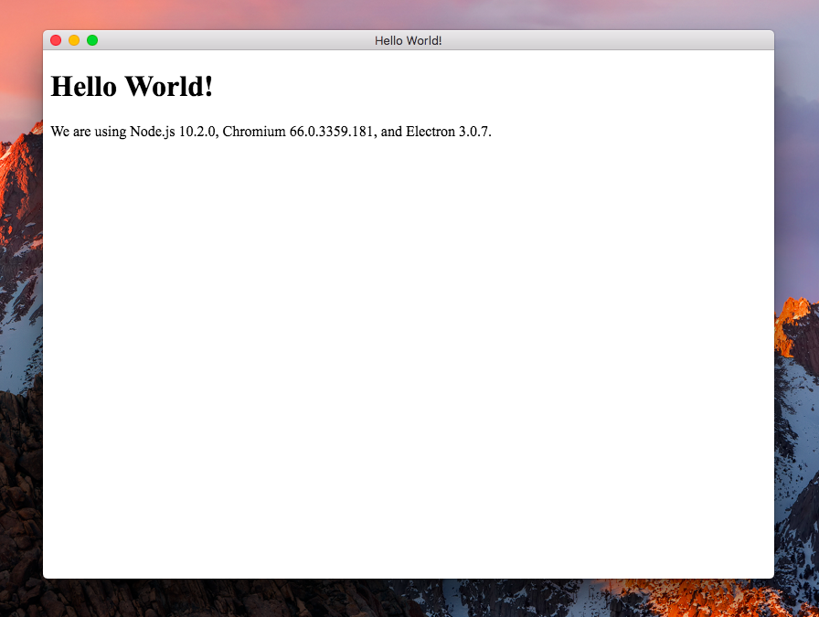

I used to hate Electron on principle. How sluggish! How arcane! Bah! Humbug. Native apps are so much faster. Painstakingly suffering through the bloat, lag, and crashing of QTCreator or Visual Studio or XCode, writing C++ so many layers deep it’s as slow as js anyway but also takes ages to compile, then embedding Lua so you can get away from it, now that’s the way to write graphical applications!
I'm since less of an ass. After using native GUI frameworks for several languages on several OS’s, I hate every single one. Making a Windows Forms application that doesn’t look and feel like complete shit is a task, and I found myself relying on Google way too often for things that should be trivial or intuitive, things like the tab order of fields.
The more time I spend programming, the more I ignore community snark and posturing and just use what I like. So! Let’s experiment with Electron. My end-goal is to write a desktop app in CoffeeScript and SASS—let’s see how that goes.
Humble Beginnings
So, first off, I grabbed the electron-quick-start repo and made sure that worked:
$ git clone https://github.com/electron/electron-quick-start
$ cd electron-quick-start
$ npm install
$ npm start
CoffeeScript
Then, I did this:
// main.js
require('coffeescript/register');
require('./app');
And then, I rewrote the original main.js in CoffeeScript:
# app.coffee
{app, BrowserWindow} = require 'electron'
mainWindow = null
createWindow = ->
mainWindow = new BrowserWindow {width: 800, height: 600}
mainWindow.loadFile 'index.html'
mainWindow.on 'closed', (-> mainWindow = null)
app.on 'ready', createWindow
app.on 'window-all-closed', (-> app.quit() unless process.platform == 'darwin')
app.on 'activate', (-> createWindow() unless mainWindow?)
So far, so good! Now, for SASS.
SASS
I tried a couple node modules to do this automatically, but had trouble getting them working. So, instead, I did this, which is fine:
$ sass --watch style.scss style.css &
Technically, I could have done this for CoffeeScript as well, but I would rather just load the compiler for now—I may work something up to precompile for releases, if we get that far along!
First Impressions
I love being able to hit Cmd+R to see my style changes immediately. No waiting 10 minutes for Visual Studio to pull its head out of its ass! Or, as in the case of ASP.NET, no rebooting visual studio. Having never used Node.js at all, really, I have a lot of reading and experimentation to do.
What Kind of App Should We Make?
It’s easiest to learn new tech by working with it. I prefer to have a real project, so I can measure my progress and have clear goals. Also, I would prefer to make something that I will use myself. So what should we make?
Ideas:
- A color palette manager for pixel artists or designers.
- A simplified vector art program for logos, shirts, etc.
- A manager for online stores like Shopify, RedBubble, TeePublic, etc.
Of these, the palette one seems the most manageable as a first project, so let’s try that.
Colr
Feature Ideas
- Allows you to keep color palettes in an organized way.
- Conveniently copy a color in a common format (html, shorthand html, RGB, HSL, CMYK).
- Export palettes to Photoshop, Aseprite, etc.
- Eyedropper for creating new palettes.
- Named colors.
- Names + Tags for palettes.
- Search by name, tag, or color.
- Recent palettes, favorite palettes.
- Color theory helper: generate complementary colors, triads, etc.
- Drag and drop an image to generate palette “ideas” from it (quantize in tiles, prioritize hues, organize into ramps).
Getting Started
First, let’s create a clean project.
$ mkdir colr
$ cd colr
$ npm init
$ npm install --save electron
$ npm install --save coffeescript
$ touch main.js
$ touch app.coffee
$ touch hello.html
$ open -a TextMate .
I set up main.js, app.coffee, and hello.html similar to the quick start example. package.json looks like this:
{
"name": "colr",
"version": "0.0.1",
"description": "a color palette manager",
"main": "main.js",
"scripts": {
"test": "echo \"Error: no test specified\" && exit 1",
"electron": "electron ."
},
"keywords": [
"color",
"palette",
"design",
"pixel",
"art"
],
"author": "Pennie Quinn",
"license": "ISC",
"dependencies": {
"coffeescript": "^2.3.2",
"electron": "^3.0.7"
}
}
So now I can do $ npm run electron to test my program. But that’s a lot of typing. Instead, let’s use a special script entry called “start”:
"scripts": {
"test": "echo \"Error: no test specified\" && exit 1",
"start": "electron ."
},
This allows us to do $ npm start instead. Nice! So, with all that, we get this:

Hello, World!
Mockups
At this point, I unplugged for a bit and got on with other things while I thought about the UX for our app. Then, I sat down and made some fast and loose mockups, on paper.
Color Picking
Creating a Palette
Saving Palettes
npm install --save electron-json-storage
Palette “Database”
Format
Reading and Writing
Searching
Configurable Path (for Sync)
Color Formats
Drag and Drop
Dragging Images In
Dragging Colors Out
App Integration
Photoshop
Aseprite
Krita
Polish
Styles
Animation
Sounds
Help File
Icon
Packaging for OSX
$ npm install --save electron-builder
$ mkdir build